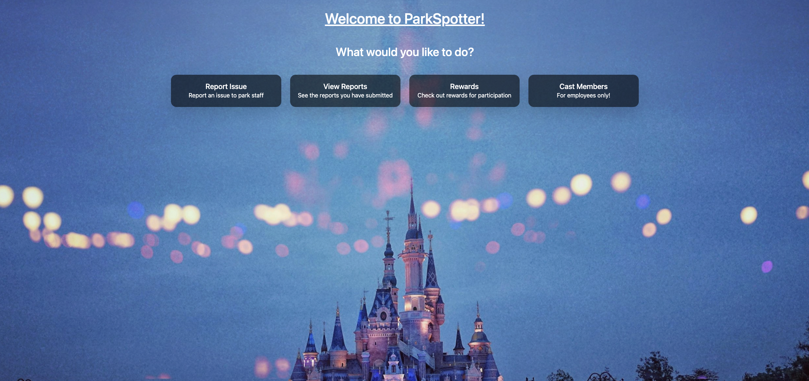
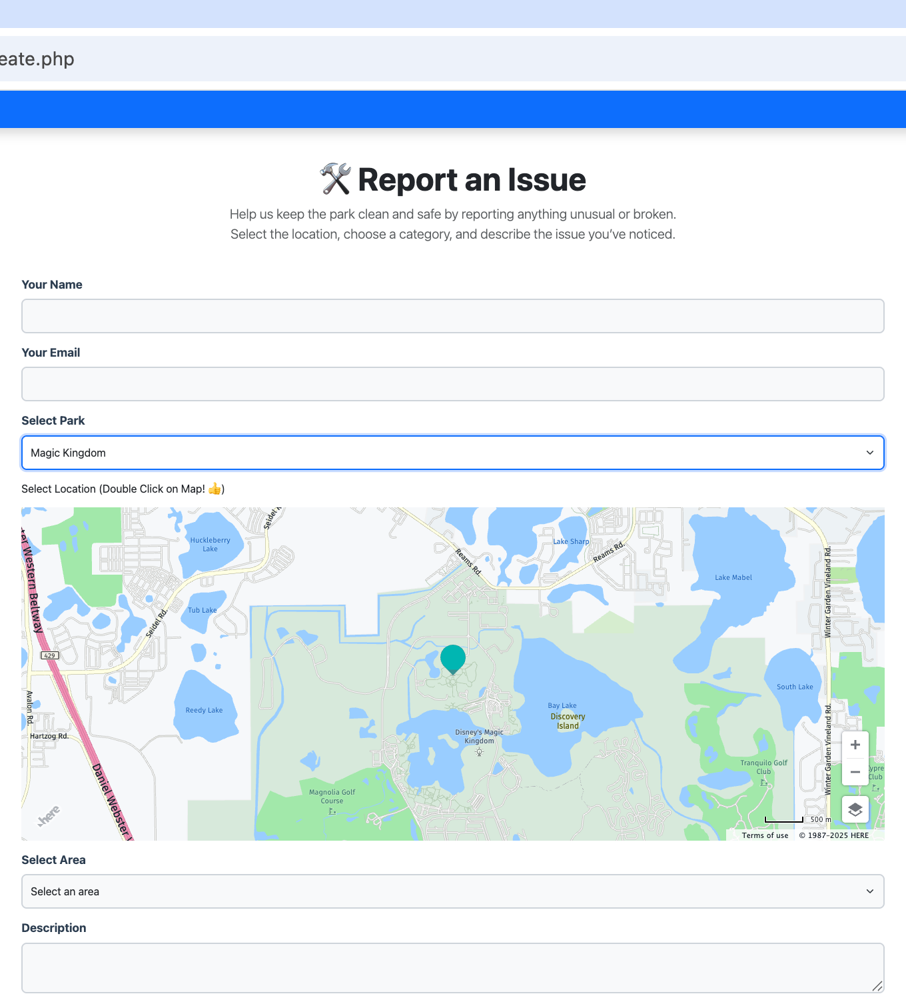
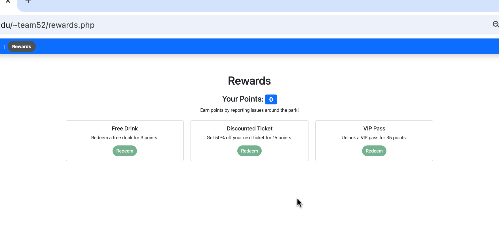
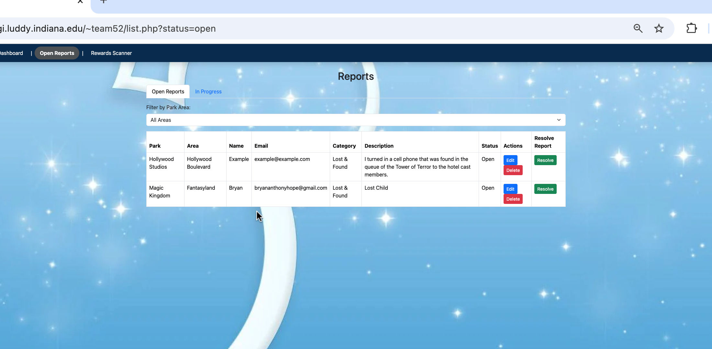

Guests notice litter, broken fixtures, and neglected facilities long before a crew walks that path.
← All work
Informatics Capstone 2024–25 · Team 52
ParkSpotter
Guests already see the overflowing can and the broken stall. Staff are somewhere else in a park the size of a small town. ParkSpotter turns that gap into a map pin, a category, and a job in a cast-member queue.

There is no lightweight way to say so. The problem sits there, and the park experience quietly erodes.
A shared system: guests pin the issue on a map; staff pick it up, update status, and close the loop.
The problem
Theme parks sell atmosphere. Litter, a stalled fountain, or a safety issue quietly taxes that atmosphere until guests decide not to come back. Our brief kept returning to a number we used as a design constraint: about 70% of guests are less likely to return to a park that feels poorly maintained.
The operational problem is not that staff don’t care. It’s that guests already have the information — “this bathroom is out of soap,” “this trash can is overflowing” — and the park has no channel that fits a day in the park. Phone numbers get ignored. Guest services means leaving the ride line. Asking the nearest cast member only works if you can find one, and if they are the right person.
We were Team 52 in IU’s Informatics Capstone, working in the themed-entertainment track. The year ran from a one-sentence ABT in the fall to a live PHP and SQL product, a fair demo, and a public booth in spring 2025.
What we heard
Before we drew screens, we interviewed five recent park-goers and ran the same questions as a survey so we could keep collecting. We also sat people in front of the Disney World and Kings Island apps and watched how they used the maps. The pattern was consistent enough to build on.
-
01
Nobody knows how to report.
Every person we asked said some version of “find an employee” — or admitted they would not know where to start. The path is informal, and it fails when the park is crowded.
-
02
Cleanliness is invisible until it isn’t.
Guests do not tour a park looking for trash. They notice restrooms, overflowing cans by food stalls, and walkways only when those things get in the way. Restrooms came up in all five interviews.
-
03
Maps have to stay out of the way.
People wanted digital maps with satellite context and wait-time style clarity. Kings Island’s 3D layer and overlapping icons were called out as hard to use. If reporting lived on a map, the map could not become a toy.
“Not sure. Maybe talk to the nearest cast member?”
“It would have to be easily accessible and not get in the way of the experience.”
“I wouldn’t know where to go. It would be nice to have a place to report these issues.”
Who it had to serve
Research gave us four personas we designed against: a first-time visitor in a rush, a season-ticket holder who wants proof their reports get handled, a parent who will only use something fast and non-tracking, and an employee who needs a queue — not a comment box dumped into email.
This was never a single-user app. Guests needed to report in under a minute, on a phone, while standing in a crowded path. Cast members needed to filter by park area, pick a job up, and resolve it. If a guest flow was delightful but the staff view was a spreadsheet with no status, the product would fail in operations. If the staff tools were powerful but reporting took six fields, guests would not bother.
-
Guest
First-time visitor
Does not know the park, does not know staff, will abandon a form that feels like homework.
-
Guest
Season ticket holder
Comes back often. Wants a list of their reports and a status they can check after the visit.
-
Guest
Parent
Will report a safety issue or a filthy walkway if it takes seconds. Will not accept an app that tracks the family.
-
Staff
Cast member
Needs location, category, and a way to mark work in progress or done. Accountability only works if the queue is real.
What I owned
I ran guest interviews and the map walkthroughs, sat with the SQL so guest reports and employee actions lived in the same loop, and shipped two of the final epics: safety fields on the report, and the live issue map that lets someone drop a pin instead of writing “near the castle, by the popcorn cart.”
Matthew Laibe built report creation and the QR rewards scanner. Ethan Harms built the points system and the guest’s own report list. Jacob Howe built employee login and the staff queue. I was not the only designer — I was the person holding the research notes next to the data model so the interface and the backend told the same story.
The product
The home screen asks one question — what do you want to do? — and offers four answers. That structure survived every revision because it matched the research: do not make a guest hunt through a park app to be helpful.

Report an issue
Name, email, park, a double-tap on a live map, an area dropdown, a short description, and a required category — cleanliness, maintenance, lost & found, or safety. Routing starts at submit. The email is how the guest later finds their own reports; we did not invent a login just to file a mess.
See your reports
Using that same email, a guest opens a table of their submissions: park, area, category, status, and actions to edit or delete. Season-ticket holders asked for this explicitly. Status is the product. Without it, reporting feels like shouting into a well.


Rewards
Points land when staff complete a report. Guests redeem them for a drink, a ticket discount, or a VIP pass, and staff can scan a QR code at the window. We treated motivation as service design. First-time visitors told us they would not report “if that isn’t my job” unless there was a reason — and they might never see the physical result.
Cast member hub
A separate login opens a working queue: open versus in progress, filter by park area, edit, delete, resolve. There is also the scanner for redemptions. The employee view is a job board, not a guest-facing theme. The data model underneath is the same REPORT row the guest created, joined to park, area, and category.
Design decisions
-
01
Pin the place, don’t describe it.
Free-text locations are useless to a crew. A double-tap on a live map, plus an area dropdown, gave staff coordinates they could act on. That was my live-map epic, and the hardest join in the project: the pin had to match the report in real time.
-
02
Categories over essays.
Guests can add a description, but they must pick a type. Safety was a field I fought to keep after we cut a broader “accessibility overlay” idea — it let a parent flag something urgent without turning the product into a second park map.
-
03
Give staff a working queue.
Open vs. in-progress, filter by park area, edit, and resolve. If the staff tool failed, guest delight would not matter. We rebuilt the database mid-year so guest records and employee actions were not fighting the same tables.
-
04
Reward the report.
A points loop made reporting feel like participation instead of complaining. QR redemption kept the perk in the park, not as a screenshot of a score.
How the plan changed
The first-semester epics were too broad. I originally owned an accessibility overlay (ramps, wheelchair rentals, ride filters) and a live-notification feed for wait times and closures. Both sounded useful. Both fought the actual product: one map that exists to place a report.
We cut the accessibility map when it started colliding with the report pin. We cut a privacy settings epic when it turned out to be a policy page pretending to be a feature. In their place we shipped a tighter pair: safety as a first-class report field, and a live issue map that stayed 2D and readable — the opposite of the 3D clutter people rejected in testing.
We built in vertical slices: one working feature at a time, database to screen, then peer-tested it. Function first, Bootstrap and a shared visual language after we knew which fields were real. Late sprints were mobile layout, contrast, and “test early, fix fast” after classroom demos.
-
Fall
Frame
ABT, interviews, personas, wireframes, and an ERD around reports, parks, areas, and categories.
-
Winter
Slice
Database, then report → queue → rewards as complete loops instead of a frontend piled on later.
-
Pivot
Cut
Dropped the extra map and the privacy epic. Kept safety fields and the pin that staff can trust.
-
Spring
Polish
Peer tests, mobile passes, fair demo. All eight final epics closed before the last sprint.
What shipped
By the capstone fair we had a working dual-sided site: guests could file, track, and redeem; staff could log in, triage, and scan. Forms blocked empty or junk submissions. Status changes wrote back to the database live. We tested on iPhone and Android, walked classmates through it without coaching, and used those sessions to simplify pages that had gotten clever.
- Year
- 2 semesters, Team 52
- Research
- 5 interviews + surveys
- Epics
- 8 shipped, 2 original ones cut
- Users
- Guests and cast members
What I learned
A reporting product is a conversation between two roles. Designing only the guest side would have been easier — and incomplete. Sitting with the database also changed how I wireframe: if a status can’t exist in the model, it shouldn’t exist on the screen.
Scope was the other lesson. The accessibility map and the notification feed were good ideas for a different product. Cutting them was the design decision that let the real one finish.
If I continued the work, I would move staff login off the guest landing, quiet the employee background so the table can breathe, and run task-timed tests on the map pin. Double-tap is learnable; it is not obvious. I would also start structured usability earlier than we did — we found the important friction, just later than I would like.